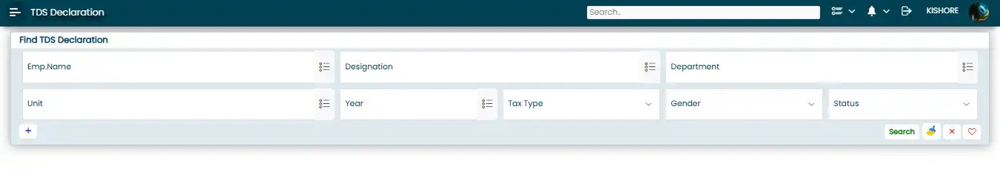
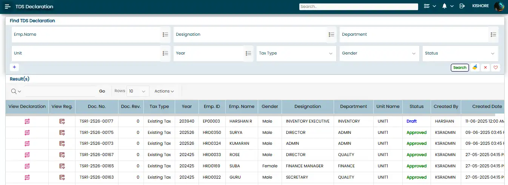
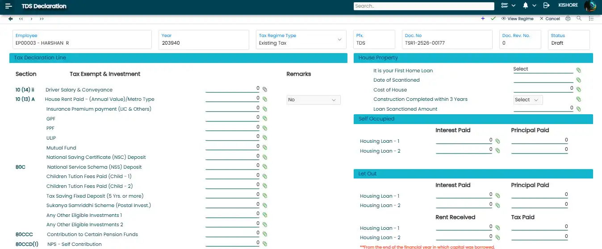

<div data-category="Payroll" data-title="TDS Declaration" data-updated="December 01, 2025" data-contributors="RoadmapIT" data-breadcrumb="Home,Payroll,TDS Declaration">
  <div class="page-content">
    <p>"TDS Declaration" is designed to manage and streamline the process of declaring and deducting Tax Deducted at Source (TDS) for employees.</p>
    <p>Based on employee, the sections can be declared in this screen.</p>
    <h5>Navigation path:</h5>
    <p class="fs-6">Payroll \ Transaction \ TDS \ TDS Declaration</p>
    <!-- TDS Declaration -->
    <h2>TDS Declaration</h2>
    
    <ul style="list-style-type: none; align-content: center">
      <li class="mouse-icon">Search screen displays the list of TDS Declaration with the relevant details.</li>
      <li class="mouse-icon">Click on search to filter all the records.</li>
    </ul>
    
    <ul style="list-style-type: none; align-content: center">
      <li class="mouse-icon">User can filter the respective documents by entering the search parameters at the header.</li>
      <li class="mouse-icon">Using search, system displays the results relevant to the search parameters entered.</li>
      <li class="mouse-icon">On-click, the corresponding transaction record will be displayed.</li>
      <li class="mouse-icon">
        Using
        
        icon, entered search parameters can be cleared.
      </li>
      <li class="mouse-icon">
        To close the screen, use
        <i class="bi bi-x fs-4 mx-2 text-danger"></i>
        icon.
      </li>
      <li class="mouse-icon">
        By clicking the
        <i class="bi bi-plus fs-4 mx-2 text-primary"></i>
        Add button user can create a new document.
      </li>
    </ul>
    
    <ul style="list-style-type: none; align-content: center">
      <li class="mouse-icon">Click Cre Rev.</li>
      <li class="mouse-icon">Enter the Amount for the necessary sections.</li>
      <li class="mouse-icon">
        Click
        <i class="bi bi-save fs-5 mx-1 text-success"></i>
        to save.
      </li>
      <li class="mouse-icon">Click Post button and the document can be forwarded for approval.</li>
    </ul>
  </div>
</div>
